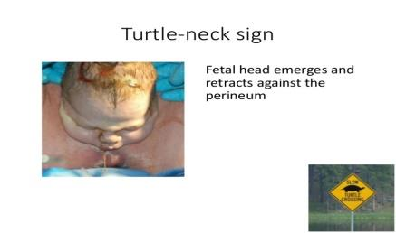
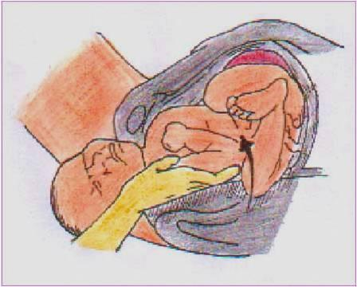
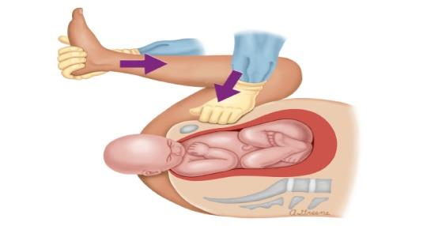
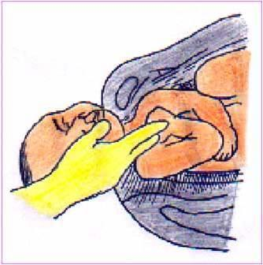
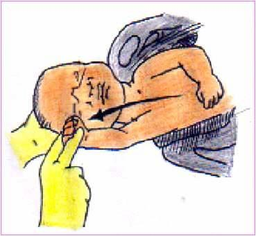

An unpredictable and unpreventable obstetric emergency (0.2-0.3% of deliveries) that occurs when the fetal head is delivered but the fetal shoulder becomes impacted behind the maternal pubic symphysis, requiring additional maneuvers to deliver. This chapter covers the definition, antepartum + intrapartum risk factors, the classic "turtle sign", the 11-step management algorithm (McRobert's first — resolves 90% of cases), and fetal + maternal complications.
Arrested delivery of fetal shoulder after delivery of fetal head and the need for additional maneuver to deliver fetal shoulder.
Unpredictable and unpreventable obstetric complication (0.2-0.3% of deliveries).
The two most important adjectives in the definition are unpredictable and unpreventable. Unpredictable means: even with all known risk factors present (macrosomia, diabetes, previous shoulder dystocia, etc.), the event cannot be reliably forecast; conversely, shoulder dystocia can occur in deliveries with no risk factors at all. Unpreventable means: there is no prophylactic intervention (e.g., elective cesarean for suspected macrosomia) that reliably prevents it; the only effective response is to recognize it quickly and execute the management algorithm. Note: this is why all delivery personnel — obstetrician, midwife, anesthetist, pediatric team — must be familiar with the maneuvers in §6-§7 even if they have never personally seen a case.
The source chapter's only intrapartum diagnostic finding: the "turtle sign" — the fetal head emerges but then retracts tightly back against the perineum, resembling a turtle withdrawing into its shell.

The natural instinct when the head is delivered is to keep pulling. Resist this urge. Continued axial traction on the head stretches the brachial plexus against the pubic symphysis and dramatically increases the risk of Erb's palsy and other nerve injuries. Once the turtle sign is recognized, the correct sequence is: (1) call for help (§6 step 1), (2) stop pulling, (3) ask the mother to stop pushing, (4) start with McRobert's maneuver (§6 step 3) — these four steps together typically resolve 90% of cases without any internal manipulation.

Looking at Figure 2, you can see that the obstruction is the pubic symphysis catching the anterior shoulder. The McRobert's maneuver (next section) works because hyperflexing the maternal hips rotates the pubic symphysis cephalad (upward, away from the shoulder), effectively shortening the distance the shoulder needs to travel. Suprapubic pressure (also next section) then pushes the anterior shoulder down and laterally so it slips under the symphysis. This is why these two maneuvers together — and not internal rotation — are the first-line approach.
The source lists 10 risk factors split into two groups — 5 Antepartum (identifiable before labor) and 5 Intrapartum (develop during labor). Remember: shoulder dystocia is unpredictable and unpreventable, so risk factors are useful for awareness and preparation, not for prevention.
Recurrence rate ~10% in subsequent pregnancies.
Birth weight > 4,000 g (or > 4,500 g in diabetic mothers) — the single most common risk factor.
Fetal hyperinsulinemia → increased shoulder and chest girth relative to head.
Maternal obesity is associated with fetal macrosomia + soft-tissue dystocia.
Induction may be performed for macrosomia or other indications, increasing shoulder-dystocia risk if fetus is large.
Slow cervical dilation may indicate relative cephalopelvic disproportion.
Cervix dilated to a point, then no further progress in the active phase.
Pushing > 2h (or > 3h with epidural) — head may be malpositioned, increasing shoulder-dystocia risk.
Strong contractions may drive the head past the shoulders before the shoulders have rotated to the oblique diameter.
Vacuum or forceps — the operator may pull the head past the shoulders.
The 10 risk factors split as "5 A's" (Antepartum) + "5 P's" (Intrapartum):
Antepartum (5): Previous SD · Macrosomia · Diabetes mellitus · Obesity (BMI > 30) · Induction of labor — (mnemonic: PMDOI = "Primed for Macrosomia, Diabetes, Obesity, Induction")
Intrapartum (5): Prolonged 1st stage · Secondary arrest · Prolonged 2nd stage · Oxytocin augmentation · Assisted vaginal delivery — (mnemonic: PSPOA = "Prolonged-Slow-Pushed-Out-Assisted")
Unifying principle: every risk factor — antepartum or intrapartum — is a factor that increases the size of the fetus (macrosomia, DM, obesity), changes the dynamics of labor (induction, prolonged stages, oxytocin, arrest), or increases the operator's force (assisted delivery, previous SD). All three mechanisms ultimately converge on the same anatomic event shown in Figure 2: the anterior shoulder is too big to fit under the pubic symphysis.
The first 5 steps of the 11-step algorithm: call for help, episiotomy, McRobert's, suprapubic pressure, and delivery of the posterior arm. McRobert's + suprapubic pressure together resolve ~90% of cases — so these are the most important to memorize.
Senior obstetrician, a pediatric resuscitation team, and an anesthetist should be present.
Why this step is the first: the operator alone cannot manage shoulder dystocia — McRobert's requires an assistant, suprapubic pressure requires a second pair of hands, the pediatric team must be ready for a possibly hypoxic or injured neonate, and the anesthetist may be needed for uterine relaxation if the Zavanelli maneuver (§7) is required.
Enlarges the vaginal opening to allow internal manipulation (steps 4-5, and the rotational maneuvers in §7). Note: episiotomy alone does not resolve shoulder dystocia — the obstruction is at the pelvic brim (Figure 2), not at the introitus — but it gives the operator room to work.

Flexion and abduction of the maternal hips positioning the maternal thighs on her abdomen. It is the most effective intervention and should be performed first (resolve 90% of cases).
If delivery is not achieved, add suprapubic pressure (step 4).
The source text says McRobert's is the "most effective intervention and should be performed first" and "resolve 90% of cases" — but then immediately notes "If delivery is not achieved, added suprapubic pressure." This is the source's way of saying: McRobert's alone is not 90% effective; the combination of McRobert's + suprapubic pressure is. The two maneuvers are applied together by default — the operator flexes the maternal hips while an assistant applies suprapubic pressure. Internal maneuvers (steps 4-5 and §7) are reserved for the ~10% of cases that do not resolve with this combination.


Pressure applied by an assistant just above the maternal pubic bone, directed downward and laterally toward the fetal back. Aims to adduct the anterior shoulder and rotate it under the pubic symphysis. Typically combined with McRobert's (step 3) — see Figure 3.
When McRobert's + suprapubic pressure fail, the next maneuver is to deliver the posterior arm:
This is a more aggressive maneuver than McRobert's + suprapubic pressure, and it carries a higher risk of fracturing the humerus or clavicle of the posterior arm. The fractures usually heal well in newborns, but they should be acknowledged in the documentation. If the posterior arm cannot be reached easily, do not pull hard — proceed to the rotational maneuvers in §7 (Rubin, Wood's corkscrew) or delivery of the posterior shoulder instead.
Steps 6-11 are reserved for the rare cases (~10%) that do not resolve with McRobert's + suprapubic pressure + posterior arm. They progress from internal rotational maneuvers (steps 6-7) to positional and surgical maneuvers (steps 8-11).
| Step | Maneuver | Description (verbatim from source) | Category |
|---|---|---|---|
| 6 | Rubin maneuver | The anterior fetal shoulder is rotated obliquely with a vaginal hand. | Internal rotational |
| 7 | Wood corkscrew | The posterior shoulder is rotated over 180 degrees with a Vaginal hand to assist delivery of the shoulders. | Internal rotational |
| 8 | Gaskin maneuver | Facilitated in a patient without regional anesthesia, she is Turned over on "all fours" inverting the anterior and posterior shoulders. | Positional |
| 9 | Cleidotomy | It is cutting of the clavicle. | Surgical (destructive) |
| 10 | Symphysiotomy | Incising the cartilaginous portion of the symphysis pubis to release the anterior shoulder. | Surgical (pelvic) |
| 11 | Zavanelli maneuver | The fetal head is flexed and pushed back up into the uterus and emergent cesarean section is done. | Reversal + CS |
A simple way to remember the 6 advanced maneuvers in order: Rubin · Wood corkscrew · Gaskin · Cleidotomy · Symphysiotomy · Zavanelli. The progression goes from internal rotation (R, W) → positional (G) → destructive surgery (C, S) → reversal + CS (Z). In a real case, the operator rarely gets past step 8 — by that point the case is in the hands of a senior obstetrician, an anesthetist, and a pediatric team.
The source's Wood corkscrew step says "with a Vaginal hand" (with a capital V and using "Vaginal" as a noun). The corrected form is "with a vaginal hand" (lowercase, used as an adjective). The source's odd capitalization is preserved verbatim here per the source-fidelity rule. It does not change the meaning — both refer to the operator's hand placed inside the vagina to rotate the posterior fetal shoulder through 180°.
Shoulder dystocia complications split into fetal (5 items in the source) and maternal (4 items in the source). Fetal complications are usually more severe and more visible; maternal complications are usually less severe but more common.
Every shoulder dystocia case must be documented in detail — the maneuvers used, the order they were used, the time from recognition to delivery, the neonatal assessment (Apgar, cord pH, evidence of injury), and the maternal assessment (blood loss, perineal trauma). This documentation serves three purposes: (1) clinical handover to the pediatric and postnatal teams, (2) medico-legal record (shoulder dystocia is one of the most litigated obstetric events), and (3) counseling for future pregnancies (a mother who had shoulder dystocia has a ~10% recurrence risk — §5 risk factor 1).
Each student should attend the departmental skill lab in order to revise with his (her) tutor of bedside part of the clinical round various maneuvers for management of shoulder dystocia illustrated on pelvic maniquin.
What this activity means in practice: the management of shoulder dystocia is a hands-on skill — it cannot be learned from reading or from lectures. The departmental skill lab will have a pelvic maniquin (a model of the maternal pelvis with a fetal maniquin) on which each student practices the maneuvers under the supervision of a tutor. By the end of the lab, the student should be able to perform the 11-step algorithm in order, with the correct hand positions and force vectors.
Suggested practice sequence (in the skill lab):
Please complete the self-assessment Google Form:
Google Form: https://forms.gle/9rUuinHypUbjcESn6
What the form covers (typical chapter checks):
.src-viz cards. They were extracted to extracted_images/29_shoulder_dystocia/ for archival.https://forms.gle/9rUuinHypUbjcESn6 (reproduced verbatim from source).